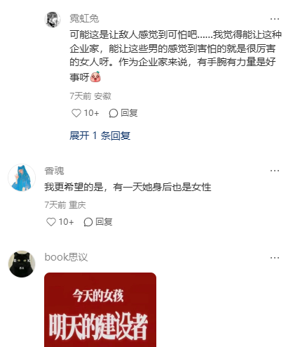
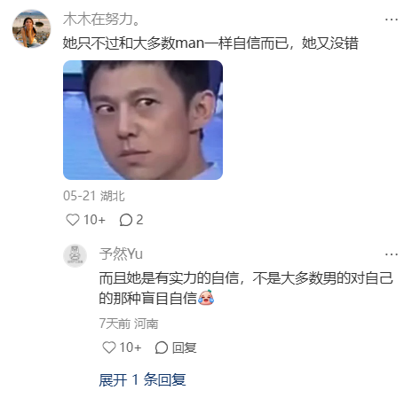

🍀🍥竹蜻蜓🍥🍀（戒od第1天）
@zqtlovekris99
@SpaceMechanic01 是个女的就七天无理由跪舔，自己在那意淫ghg上了


🌨️☂️凝冻态❄️☃️
@SpaceMechanic01
你们墙内“女权”能不能别这么搞笑，连董明珠都舔上了，董明珠都成“独立女性的代表”“英雌”了。董明珠多富和你有什么关系？董明珠除了疯狂剥削、PUA她手底下的男女工人以外，帮助哪个女性了？
如果以后金正恩的女儿/习近平的女儿即位了，会不会也有“女权”跑去舔，说这俩女独裁者是“英雌”？ https://t.co/5Lrbs61jnE